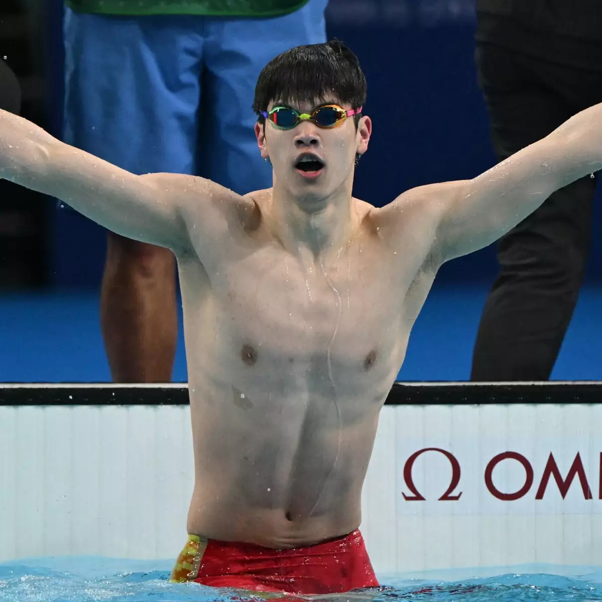
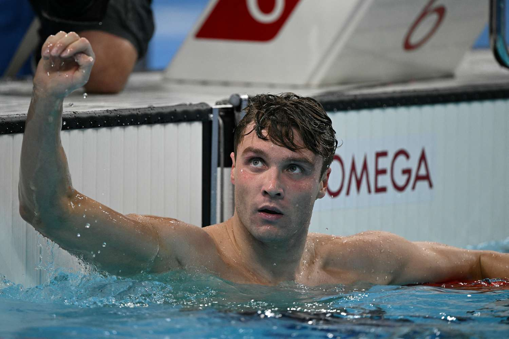
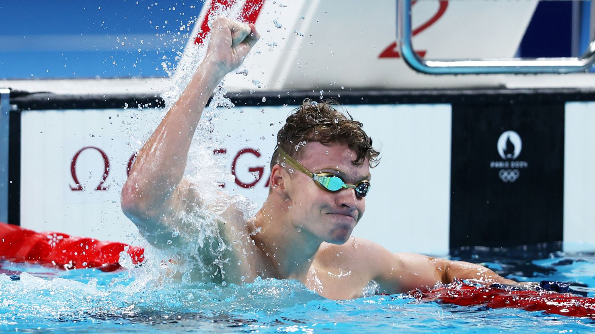
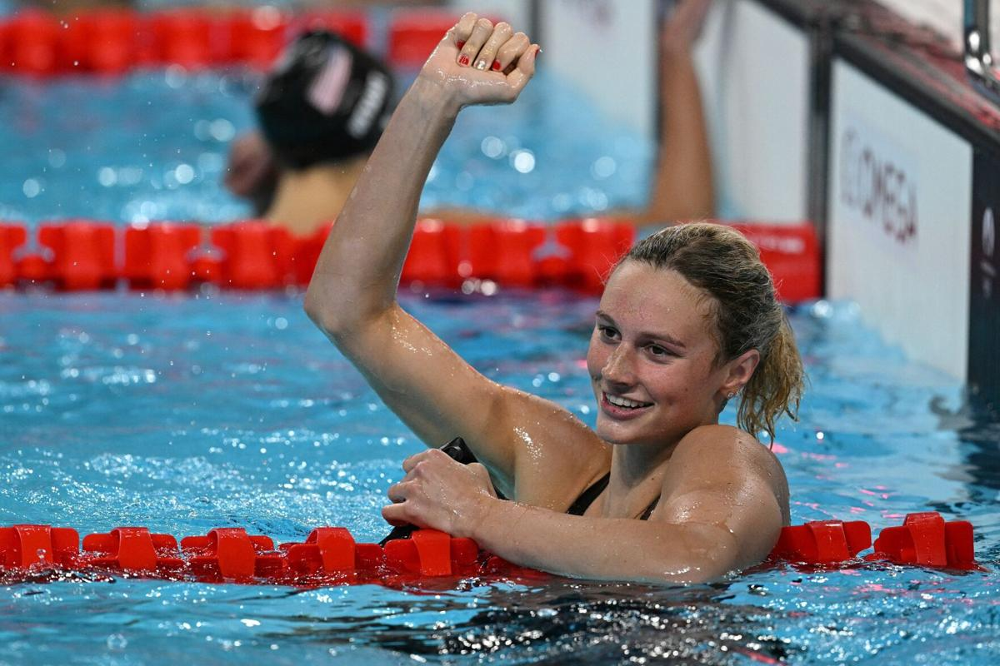
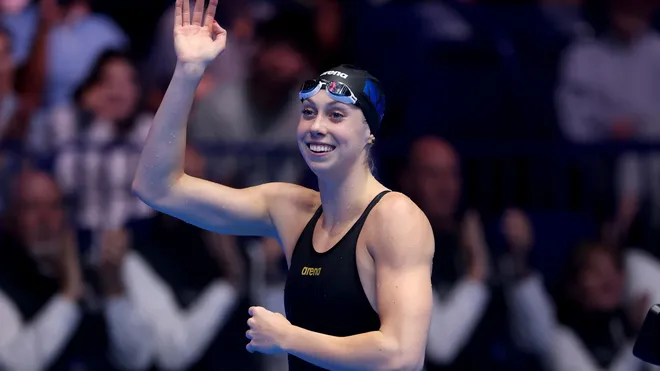
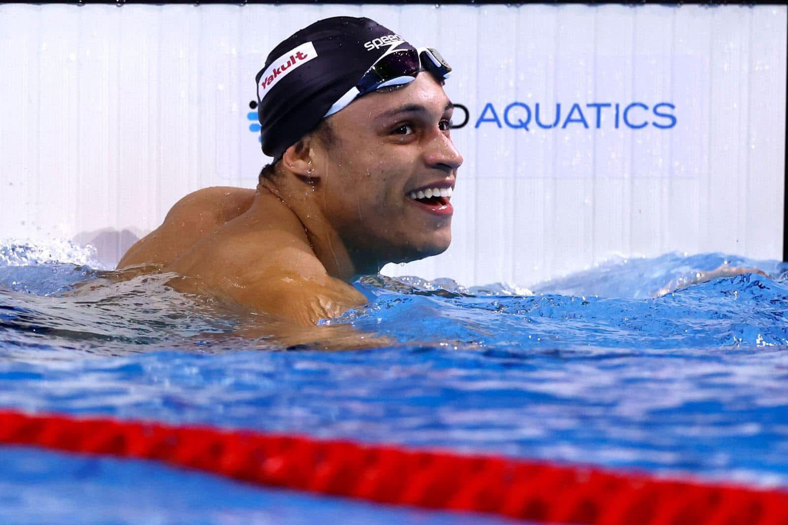
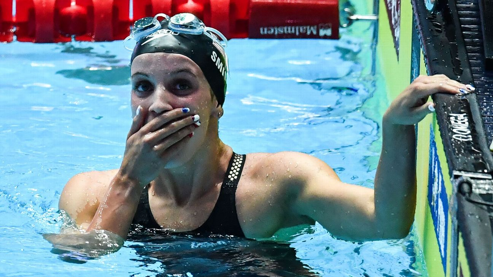
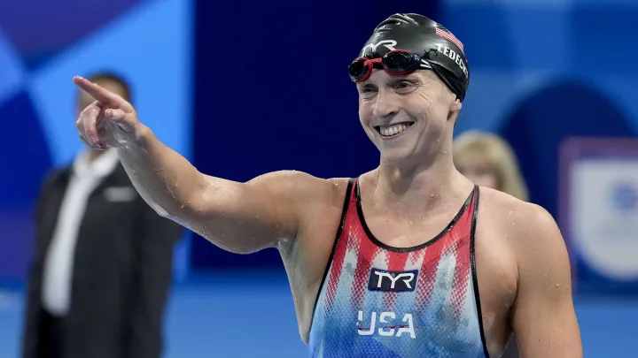

Mundial 2025
As provas da natação do Mundial Singapura 2025 acontecerão de 26 de julho a 3 de agosto.
Destaques da liga universitária NCAA - Division I
Season 23/24
Liga feminina:
Gretchen Walsh - University of Virginia
Alex Walsh - University of Virginia
Aimee Canny - University of Virginia
Torri Huske - Stanford University
Gabi Albiero - University of Louisville
Lucy Mehraban - University of Louisville
Liga masculina:
Leon Marchand - Arizona State
Josh Liendo - University of Florida
Johnny Marshall - University of Florida
Jordan Crooks - University of Tennessee
Hubert Kós - Arizona State
Luke Hobson - University of Texas
Notícias Olímpicas para LA28
O Conselho Executivo do Comitê Olímpico Internacional (COI) anunciou na quarta-feira, dia 9 de abril de 2025, a inclusão das provas de 50m da natação nos nados costas, borboleta e peito, feminino e masculino, ao programa dos Jogos LA28.
Atletas para ficar de olho
Pan Zhanle (China)

Bobby Finke (EUA)

Leon Marchand (França)

Summer McIntosh (Canadá)

Gretchen Walsh (EUA)

Jordan Crooks (Ilhas Cayman)

Regan Smith (EUA)

Ariarne Titmus (Austrália)

Katie Ledecky (EUA)
